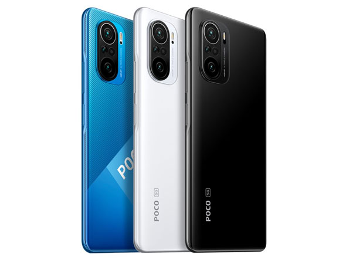
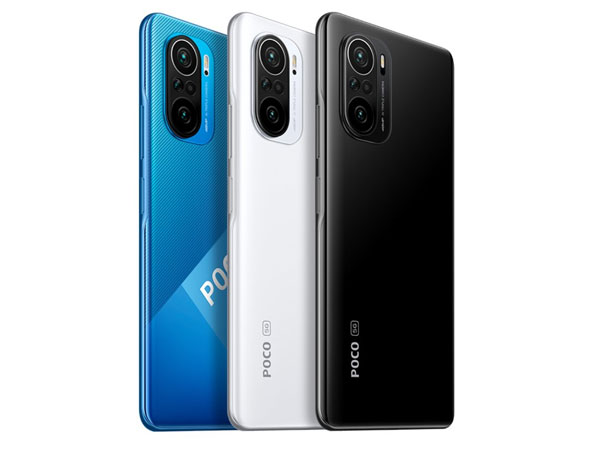

Review Highlights
Click on an image to read a short review based on my personal experience.

 


üì± The Huawei Nova 2i was my first serious phone, and it served well with solid build quality and decent camera performance for the time.
üöÄ The Xiaomi Mi 9T Pro felt like a flagship killer ‚Äî fast, sleek, and that pop-up camera was always a conversation starter.
üçé The Xiaomi Poco M4 Pro is kinda ass ngl.
üöÄ The Xiaomi Poco F3 felt like a flagship killer ‚Äî fast, sleek, and that pop-up camera was always a conversation starter.
üöÄ The iPhone 14 Pro was a leap in smoothness, especially the display and camera quality. iOS took some time to get used to, but it grew on me.